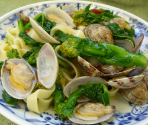

菜花とアサリのフィットチーネ
- 調理時間：30 分
- （一人当たり）
- カロリー：470kcal
- たんぱく質：17.6g
- 脂質：7.4g
- 塩分：1.8g

＜２人分＞
- フィットチーネ
- 200g
- 菜花
- 100g
- アサリ（殻つき）
- 200g
- オリーブオイル
- 大さじ1
- 白ワイン
- 50cc
- 鷹の爪
- 1本
（お好みで） - 塩
- 少々
- コショウ
- 少々
- 柚子の皮（千切り）
- 少々

- アサリは塩水で塩抜きしておく。
- 菜花は５ｃｍ長さに切る。鷹の爪は輪切りにする。
- フライパンにオリーブオイル、鷹の爪をいれて弱火にかけ、香りがでてきたらアサリを加える。白ワインを加えてフタをして蒸し煮する。
- アサリの口が開いたら、菜花を加えて火を通す。
- たっぷりの湯に、塩（分量外）を加え、フィットチーネをゆでる。ゆであがったら、ザルにとって湯をきる。
- ④に⑤を加えて炒め合わせ、塩、コショウで味をととのえる。器に盛り付け、柚子の皮を散らす。
菜花とアサリのフィットチーネ
受験シーズン到来。受験生には受験当日に１２０％の力が発揮できるよう集中力を高めておきたい時期です。集中力を高める栄養素として欠かせないミネラルに鉄があります。鉄は酸素を運搬するヘモグロビンを形成に不可欠な栄養素。鉄が欠乏すると体内は酸欠状態になり、持久力がなくなり注意力散漫になりがち。鉄は吸収が悪いので毎日の食事でとることを心がけましょう。
アサリは鉄分が多く、その他、ビタミンＢ12、タウリンなど貧血予防の要素がいっぱいです。さらに、鉄と共にヘモグロビンの材料になるタンパク質も含まれています。今回のように、ビタミンＣ の多い菜花と食べあわせることで吸収しにくい鉄分の吸収率もアップ。
教科書を見直して、仕上げは食事をととのえよう。がんばれ受験生！